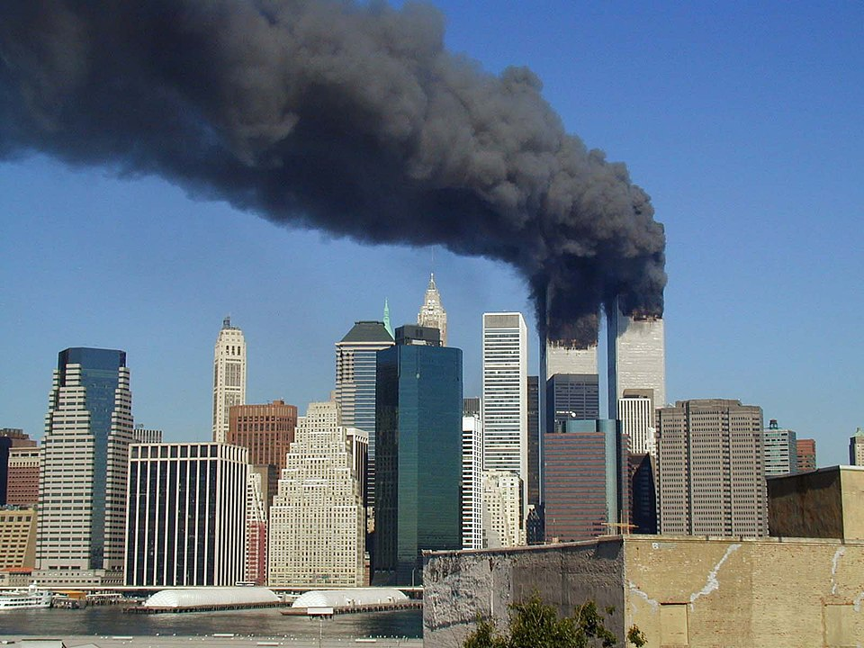

World Trade Center 7 — The Building That Nobody Discusses
At 5:20:33 PM on September 11, 2001, a 47-story steel-framed skyscraper at 7 World Trade Center — which had not been struck by either aircraft — collapsed uniformly into its own footprint in 6.5 seconds. Free-fall acceleration (the speed at which a dense object falls with no resistance) is achieved only when every supporting column is removed simultaneously. No steel-framed high-rise building had ever collapsed due to fire before September 11, 2001. Three did on that day. WTC7 housed offices of the CIA, the SEC, the US Secret Service, and the New York City Office of Emergency Management. The building is not mentioned once in the 9/11 Commission Report. NIST's final report into WTC7's collapse (2008) acknowledges 2.25 seconds of free-fall acceleration without explaining how free-fall is possible in a fire-induced progressive collapse where structural resistance should slow the descent.
Architects and Engineers for 9/11 Truth (AE911Truth.org) — as of 2026 — has the signatures of 3,600+ licensed architects and engineers who have reviewed the NIST collapse models and concluded they are physically impossible as described. The University of Alaska Fairbanks conducted a four-year computer modelling study (Leroy Hulsey, 2019) concluding that WTC7 "did not collapse due to fires" and that "the collapse of WTC 7 was a global failure involving the near-simultaneous failure of every column in the building." NIST's own models show WTC7 collapsing 40% slower than it actually did — meaning the real collapse was faster than NIST could model even with every known fire-induced mechanism active.
At 4:57 PM on September 11, BBC reporter Jane Standley announced on live television that WTC7 had collapsed — while the building was still visibly standing in the shot over her shoulder. WTC7 did not actually collapse until 23 minutes later. CNN anchor Aaron Brown made a similar announcement at 4:15 PM stating that WTC7 "has either collapsed or is collapsing." The BBC has acknowledged the error and claimed it resulted from confused wire reports. Critics note that a wire report describing a specific building collapse — a building that had not yet collapsed — would have to originate from a source with foreknowledge. BBC no longer holds the September 11 archive footage and claims the raw tapes "were lost."
PNAC — The Pre-Written Blueprint
The Project for a New American Century — a neoconservative think tank whose members included Dick Cheney, Donald Rumsfeld, Paul Wolfowitz, Jeb Bush, Richard Perle, and other future Bush administration figures — published a document in September 2000 titled "Rebuilding America's Defenses." The document called for a massive increase in US military deployment, regime change in Iraq, and unilateral global military dominance. Critically, it noted that "the process of transformation... is likely to be a long one, absent some catastrophic and catalyzing event — like a new Pearl Harbor." Within 13 months, the most catastrophic and catalyzing event in modern US history occurred, enabling precisely the military expansion PNAC had prescribed.
Nanothermite — The Physical Evidence
Dr. Niels Harrit (University of Copenhagen) and colleagues published "Active Thermitic Material Discovered in Dust from the 9/11 World Trade Center Catastrophe" in The Open Chemical Physics Journal (2009). The paper documented the presence of nanothermite (a high-temperature incendiary explosive used in controlled demolition and military applications) in four independently collected WTC dust samples. The samples were shown to contain red-grey chips that, when ignited, produced temperatures over 1,700°C and residue chemically consistent with the products of thermite reaction. The study has not been retracted and has not been specifically rebutted in peer-reviewed literature.
The Air Defence Stand-Down
NORAD's standard procedure for intercepting off-course aircraft was to scramble fighters within minutes of loss of radio contact. In the preceding 10 months, NORAD had scrambled fighters 67 times. On September 11, four aircraft flew significantly off course with transponders disabled for between 30 minutes (Flight 11) and 77 minutes (Flight 93) before impact. No fighters reached any of the aircraft. General Richard Myers, acting Chairman of the Joint Chiefs on September 11, testified to Congress that he was unaware of the attacks until the Pentagon was struck — an extraordinary claim given NORAD alert protocols. Cheney's office — according to Transportation Secretary Norman Mineta's Commission testimony — was tracking AA 77 approaching the Pentagon and giving stand-down orders throughout its approach.
The $2.3 Trillion and Donald Rumsfeld
On September 10, 2001 — the day before the attacks — Secretary of Defense Donald Rumsfeld held a press conference announcing that the Department of Defense could not account for $2.3 trillion in transactions. The story was briefly reported, then vanished from the news cycle as the events of September 11 dominated coverage. The Pentagon office investigating the missing funds — the Office of the Comptroller, staffed by financial analysts — was in the exact section of the Pentagon that was struck on September 11, killing 34 of the 40 staff. All records and computers in that office were destroyed.
Put Options and Insider Trading
In the days before September 11, an extraordinary volume of "put options" (bets that a stock will fall) were purchased on American Airlines, United Airlines, and the investment banks headquartered in the WTC. The Chicago Board Options Exchange reported put option volume on American Airlines was 285 times normal on September 10. The head of the CIA in the early 1990s was A.B. "Buzzy" Krongard — who was executive director of CIA on 9/11 and whose former firm, Alex Brown (the US arm of Deutsche Bank), was the primary broker through which the put options were purchased. The FBI announced in September 2001 that it was investigating the trades. It has never reported the results of that investigation publicly.
The Outcome: What 9/11 Achieved
Within 45 days: the USA PATRIOT Act passed (domestic surveillance); within 18 months: the Department of Homeland Security created; the Office of the Director of National Intelligence created; the Transportation Security Administration created. Within 2 years: invasion and occupation of Afghanistan; invasion of Iraq. The combined military spending increase 2001-2011: $3.3 trillion. The combined revenue of defence contractors over the same period increased by approximately $1 trillion. Iraq's oil fields were privatised. Afghanistan's opium production increased 40-fold from Taliban-suppressed levels. Every strategic objective outlined in the PNAC document was achieved within a decade. Every objection to those objectives was silenced by the weight of 3,000 dead civilians and the accusation of "conspiracy theory."